BAREUNSUP's Surgical Treatment
정확하고 정밀한 진단을 통해
덜 아프고 빨리 낫는 수술을 합니다.
많은 수술로 쌓은 의료진의 경험으로
환자 한 분 한 분의 상태에 맞춰 치료 계획을 세웁니다.
수술 치료
영상을 꼼꼼히 읽고 정확히 진단한 뒤 환자 상태에 맞는 방법으로 수술합니다.
양방향내시경(UBE)
양방향내시경(UBE)
디스크나 척추관 협착증이 생긴 자리에 0.7~1cm 안팎의 작은 구멍 두 개를 내고, 한쪽으로는 고해상도 미세 내시경을, 다른 쪽으로는 수술 기구를 넣어 병든 부분을 없애는 최소침습 척추 치료입니다.
터진 디스크나 신경을 누르는 좁아진 부위를 화면으로 바로 보면서 떼어 내므로, 여러 척추 질환에서 오는 통증과 신경 증상을 덜어 줍니다.
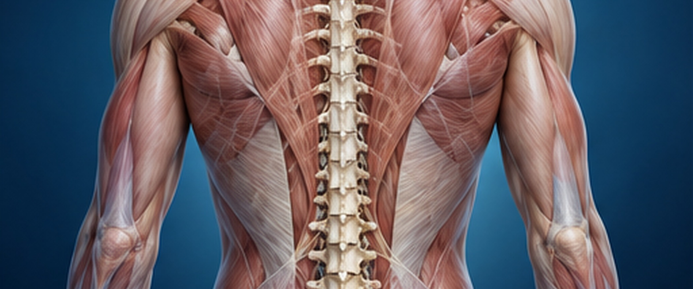
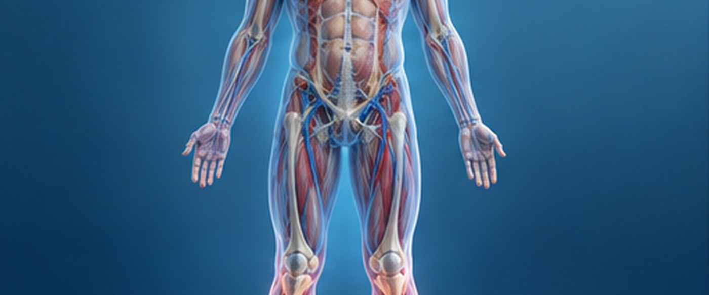
특징

최소침습
치료방법
특장점
미세현미경수술
미세현미경수술
척추마취를 한 뒤 엎드린 자세로 하며, 2cm가 넘지 않는 작은 절개로 들어가 특수 미세현미경으로 수술 부위를 크게 확대해 봅니다.
확대한 화면을 보며 미세드릴과 수술 기구로 다친 디스크나 병든 부위를 정밀하고 안전하게 떼어 내 통증을 줄이는 최소침습 척추 수술입니다.
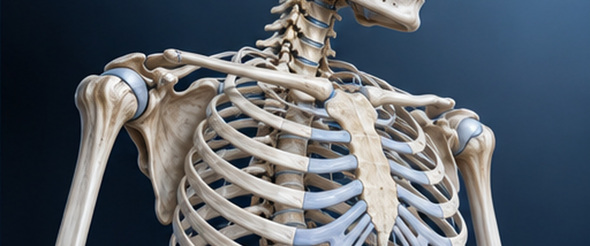
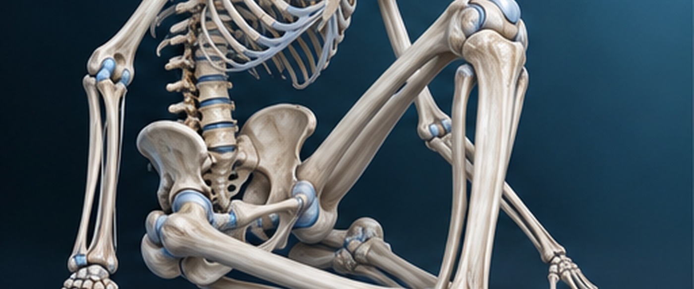
특징
치료방법
특장점
인공디스크치환술
인공디스크치환술
다친 디스크를 떼어 낸 자리에 특수하게 만든 인공디스크를 넣어 척추가 계속 유연하게 움직이도록 하는 수술입니다.
인공디스크는 원래 디스크처럼 움직이도록 만들어져 있어서, 척추 유합술 뒤에 바로 위아래 마디가 빨리 닳는 문제를 막는 데 도움이 됩니다.
그래서 척추가 원래처럼 움직일 수 있게 되고, 둘레 조직도 거의 다치지 않습니다.
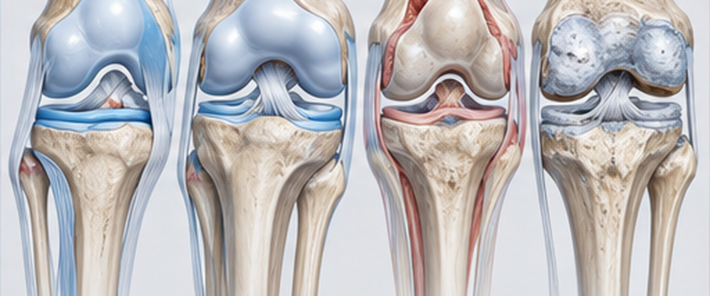
특징
치료방법
특장점
척추체 유합술
척추체 유합술
다친 디스크와 척추 일부를 떼어 내고 인공 디스크와 나사못 같은 고정 기구로 위아래 척추를 한 덩어리처럼 묶어, 척추가 흔들리지 않게 단단히 잡아 주는 수술입니다.
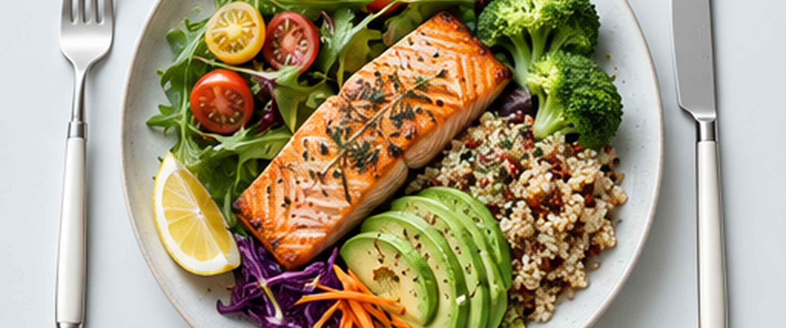
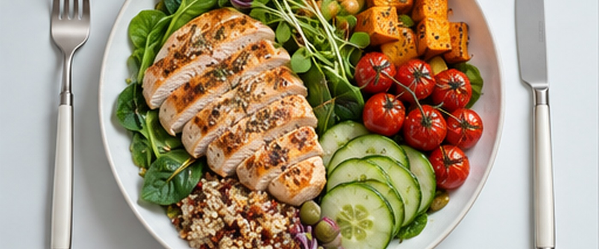
특징

전방 또는 후방
접근 가능
치료방법
특장점
후방 감압술
후방 감압술
척추관 협착증으로 좁아진 신경 통로를 넓히는 수술로, 척추 뒤쪽에서 들어가 신경을 누르는 뼈와 조직을 떼어 내 눌린 신경을 풀어 줍니다.
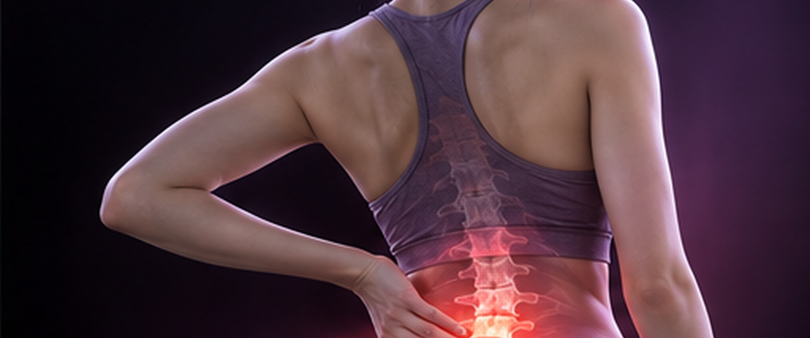
특징
치료방법
특장점
척추 후궁절제술
척추 후궁절제술
척추 후궁절제술은 척추 뒷부분인 후궁을 떼어 내 신경이 지나는 척추관을 넓혀 주는 수술로, 협착증이 심한 환자에게 많이 합니다.
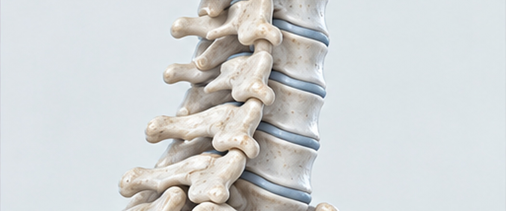
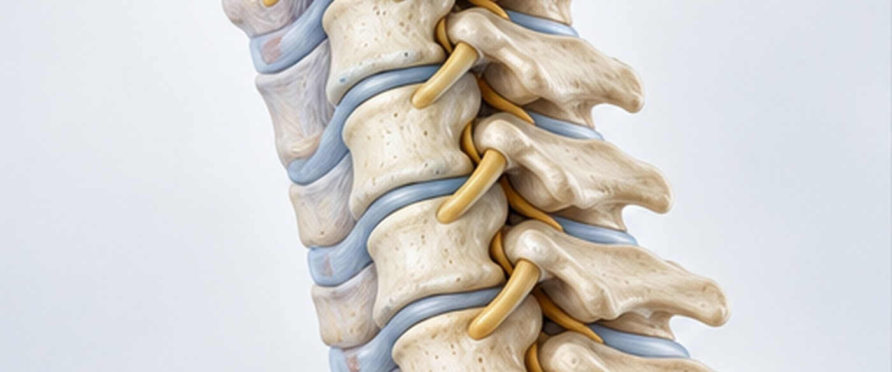
특징

고정술 병행
치료방법
특장점
후방 나사 고정술
후방 나사 고정술
척추 마디를 나사못과 금속 막대(로드)로 단단히 묶어 흔들리던 척추를 다시 안정시키는 수술입니다.
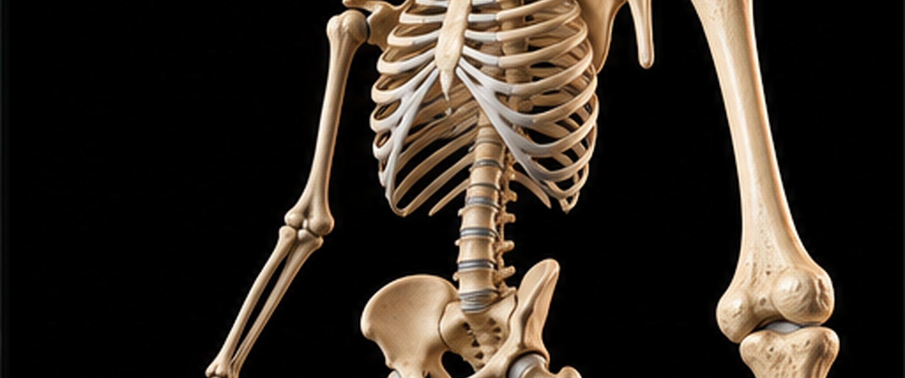
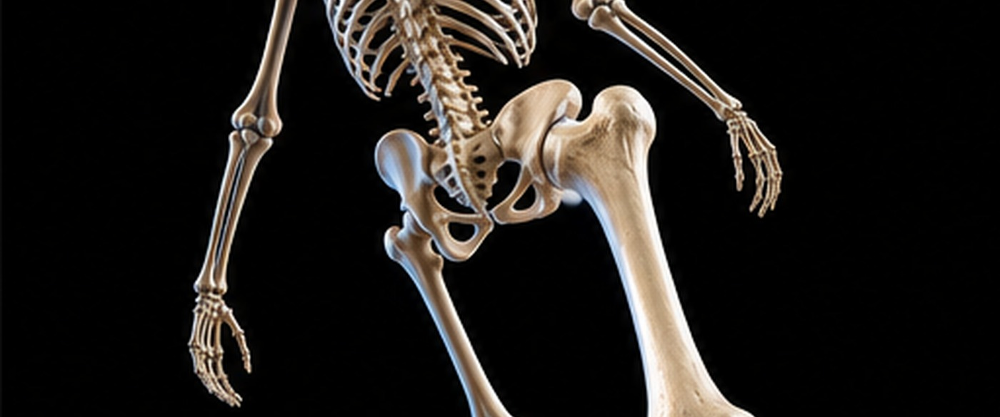
특징
치료방법
특장점
미니 척추 유합술
미니 척추 유합술
절개를 작게 해서 하는 척추유합술로, 약해진 척추 마디를 나사못과 유합재로 단단히 묶어
척추가 다시 안정되도록 하는 수술입니다. 척추 마디가 지나치게 많이 움직이면서 생기는 통증과
신경 눌림을 함께 해결하며, 예전 유합술보다 조직을 덜 다치게 하고 회복도 빠릅니다.
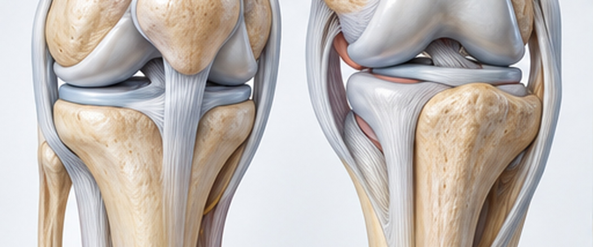
특징
치료방법
특장점
단일공 내시경 수술
단일공 내시경 수술
단일공 내시경 수술은 척추 질환을 최소침습으로 치료하는 방법으로, 1cm쯤 되는 구멍 하나로 내시경과 수술 기구를 함께 넣어 병든 부분을 떼어 내거나 눌린 신경을 풀어 줍니다.
특징
치료방법
특장점
추간공내시경(PELD)
추간공내시경(PELD)
신경이 빠져나가는 통로인 추간공으로 내시경을 넣어 빠져나온 디스크를
떼어 내고 눌린 신경을 풀어 주는 최소침습 치료입니다.
허리디스크(추간판탈출증)가 비수술 치료로 나아지지 않을 때 하며, 디스크 탈출증과 협착증이 있는 분에게 잘 맞습니다.
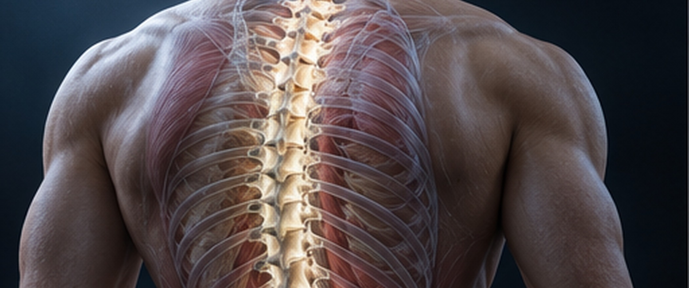
특징
최소침습

즉시가능

즉각개선

모두 가능
치료방법
후궁간내시경(PSLD)
후궁간내시경(PSLD)
1cm가 안 되는 작은 절개로 고화질 초소형 내시경을 척추 후궁(뒤쪽 뼈 구조)에 넣고, 병든 자리와 척추 신경을 직접 보면서 치료하는 방법입니다.
이 방법으로 척추관협착증이나 디스크를 일으키는 두꺼워진 인대와 뼈, 빠져나온 디스크 조각을 떼어 내 허리와 엉치, 다리 통증을 줄여 줍니다.
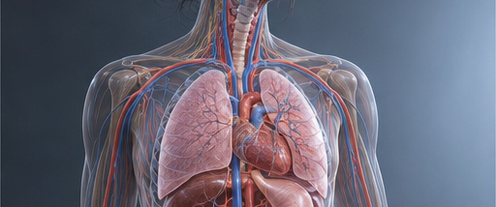
특징
최소침습
즉시가능
즉각개선
모두 가능
치료방법
척추시술, 성공의 열쇠!
시술 경험이 많은 의료진의 실력입니다.
수많은 시술을 해 온 바른숲병원 의료진은 환자마다 상태를 꼼꼼히 따져 보고,
그에 맞는 치료법을 골라 좋은 결과로 이어지게 합니다.
척추관협착증이 있으면 어떤 운동을 하는 것이 좋을까요?
협착증은 척추관이 좁아져 신경이 눌려서 생기는 병이라, 허리를 앞으로 숙여 척추관을 조금 넓혀 주면 증상이 나아지는 특징이 있습니다.
바로 누워 무릎을 가슴 쪽으로 당긴 채 30초쯤 버티면서 허리 근육을 조였다 풀었다 합니다.
척추기립근을 키우는 운동도 협착증이 더 나빠지지 않게 하는 데 좋습니다.
양방향내시경 수술은 어떤 분께 맞나요?
척추 질환은 환자의 증상과 병이 얼마나 진행됐는지에 따라 치료가 달라집니다.
처음에는 약물이나 물리치료, 주사치료 같은 비수술 치료로 좋아지는 경우가 많지만,
디스크나 협착증이 심한 경우에는 이런 치료만으로 통증을 잡기 어려울 때가 있습니다.
비수술 치료만 되풀이하다 수술할 때를 놓치면 증상이 점점 나빠져 다리에 힘이 빠지거나 대소변을 보기 어려워지는 심각한 문제가 생길 수 있습니다.
양방향 내시경은 이런 분들에게 비수술 치료와 예전 방식 수술 사이쯤에 있는 치료로,
절개를 아주 작게 하면서도 문제가 된 부분을 제대로 치료할 수 있는 방법입니다.
디스크와 척추관 협착증이 중간 이상으로 심한 분은 물론, 당뇨병·고혈압이 있거나 나이가 많아 전신마취나 큰 수술이 걱정되는 분에게도
안심하고 고를 수 있는 방법입니다. 절개가 작아 회복이 빠르고 통증이 줄어드니 수술에 대한 걱정을 많이 덜 수 있습니다.
수술, 무조건 피하는 것만이 답일까요?
보통 수술은 마지막에 하는 치료로 여겨지고, 통증이 처음 생겼을 때 곧장 수술을 권하지는 않습니다.
대개는 약물치료나 물리치료, 주사치료 같은 보존 치료를 먼저 해 보고, 효과가 있는지 지켜보는 것이 순서입니다.
하지만 수술을 피하는 데만 매달리다 치료할 때를 놓치면 위험합니다.
주위에서 수술이 나빴다는 이야기만 듣고 수술을 마다하면 병이 깊어져 증상이 더 심해지기도 합니다.
이를테면 허리에서 시작된 통증이 다리 저림으로 이어지고, 다리에 힘이 빠지거나 대소변을 보기 힘들어지는 데까지 갔다면
신경이 이미 다치고 있다는 뜻이어서 서둘러 수술해야 할 수 있습니다.
수술이 필요한 때는 기준이 비교적 분명하며, 그 시기를 미루면 수술을 받고 나서도 경과가 나빠질 가능성이 커집니다.
그러니 증상이 심해진다면 전문의와 상의해 언제 치료하는 것이 좋은지 정하시길 권합니다.
목디스크 수술은 큰 병원에서만 안전할까요?
"목은 위험한 곳이라 수술은 무조건 큰 대학병원이나 종합병원에서 해야 한다"고 걱정하시는 환자분이 적지 않습니다.
목 수술이 섬세하고 조심해야 하는 수술인 것은 맞지만, 병원이 크다고 해서 더 안전한 것은 아닙니다.
수술이 잘되느냐는 병원 규모보다 직접 수술하는 전문의의 손 기술과 경험에 훨씬 더 많이 달려 있습니다.
목디스크 수술은 신경과 혈관이 빽빽하게 모인 곳을 다루기 때문에, 전문의의 정밀한 기술과 환자 상태를 충분히 아는 것이 무척 중요합니다.
그래서 수술받을 병원을 고르실 때는 병원 크기보다 그 의료진이 얼마나 전문적이고 경험이 많은지를 보고 정하시는 편이 좋습니다.
목디스크 수술은 제대로만 하면 성공률이 높고 회복도 빠른, 충분히 안전한 치료입니다.
내 몸에 나사못이?
척추유합술 설명을 처음 듣는 환자분이나 보호자분 가운데 "척추에 나사못을 박는다"는 말에 걱정부터 하시거나 꺼리시는 경우가 적지 않습니다.
"나사못"이라는 말만 들어도 겁이 나실 수 있습니다.
하지만 척추유합술에 쓰는 나사못(척추 나사 고정 장치)은 오랜 세월 수많은 수술에서 안전성과 효과가 확인된 고정 장치입니다.
이 기구는 흔들리던 척추를 단단히 잡아 뼈가 바르게 붙도록 도와주며, 수술 뒤 통증을 줄이고 몸의 기능을 되찾는 데 큰 몫을 합니다.
나사못은 몸에 잘 맞는 재료(주로 티타늄)로 만들어져 몸 안에 넣어도 거부 반응이 거의 없고, 오래 두어도 안전하다는 것이 확인되었습니다.
알맞은 환자에게 하는 척추유합술은 척추 질환을 치료하는 믿을 만하고 효과 좋은 방법 가운데 하나입니다.
척추 수술을 받고 바로 걸을 수 있나요?
척추 수술 뒤 회복은 어떤 수술을 받았는지와 환자 상태에 따라 다릅니다.
양방향 내시경이나 단일공 내시경 같은 최소침습 수술, 또는 간단한 감압술을 받았다면 수술하고 몇 시간 뒤부터 걸을 수 있는 경우가 많습니다.
척추유합술이나 고정술처럼 척추를 단단히 묶는 수술이라면, 한동안 누워서 쉰 다음 걷기 재활을 차근차근 시작합니다.
의료진이 알려 드리는 대로 조금씩 움직이는 양을 늘려 가시면 됩니다.
수술 말고 약이나 비수술 치료로만 버텨 보면 안 될까요?
어떤 치료를 할지는 환자의 증상과 병의 진행 정도를 보고 정합니다.
처음에는 약물치료나 물리치료, 주사치료 같은 비수술 방법으로 증상을 좋게 해 보는 것이 보통입니다.
그런데 통증이 점점 심해져 일상생활이 어렵거나, 다리가 저리고 힘이 빠지거나 대소변을 보기 어려운 신경 증상이 생겼거나,
비수술 치료를 받아도 나아지지 않고 오히려 나빠진다면 수술을 해야 할 수 있습니다.
수술은 증상과 상태를 정확히 따져 본 뒤 전문의가 권하는, 치료의 마지막 단계입니다.
나이 든 분도 척추 수술이 괜찮은가요?
예전에는 나이 든 분에게 척추 수술이 위험하다고 여겼지만, 수술과 마취 기술이 발전하면서 지금은 고령이어도 안전하게 척추 수술을 받으실 수 있습니다.
양방향 내시경이나 단일공 내시경 같은 최소침습 수술은 절개가 작고 피도 적게 나며 회복 부담이 적어서
나이가 많거나 당뇨·고혈압 같은 만성질환이 있는 분에게도 잘 맞을 수 있습니다.
나이가 많은 분은 수술 전에 온몸 상태를 꼼꼼하게 검사해 보고 나서 수술해야 합니다.
단일공 척추내시경 수술을 받기 좋은 환자는 누구인가요?
단일공 척추내시경 수술은 아주 작은 절개로 신경을 누르는 부분만 떼어 내는 방법입니다. 한 곳에 국한된 허리디스크나 추간판 탈출증, 아직 심하지 않은 초기 척추관 협착증이 있는 분, 나이가 많거나 만성질환 때문에 전신마취가 어려운 분, 비수술 치료를 받아도 낫지 않는 오래된 허리 통증이 있는 분에게 잘 맞습니다. 크게 여는 예전 수술보다 피가 적게 나고 감염 위험이 낮으며, 근육을 덜 다쳐 회복이 빠릅니다.
디스크 바깥 막(외륜)이 찢어졌다면 치료 계획을 세울 때 무엇을 가장 먼저 따져야 하나요?
디스크 외륜이 찢어졌을 때 치료 계획을 세우려면 정확한 진단부터 해야 합니다. 정확히 진단하지 않고서는 계획을 세울 수 없고, 진단 결과를 바탕으로 충분히 재활할 수 있도록 시간을 넉넉히 두면서 치료 일정을 짜야 합니다.
전방전위증이 있을 때 수술할지는 무엇을 보고 정하나요?
전방전위증이 있을 때 수술할지는 무엇을 보고 정하나요?
전방전위증으로 수술할지를 정할 때는 **뼈가 얼마나 어긋났는지보다 신경이 제 기능을 하고 있는지**를 봅니다. 뼈가 어긋나 있더라도 신경 기능이 괜찮고 다리가 마비되는 것 같은 신경 증상이 심하지 않다면 수술하지 않아도 될 수 있습니다.
척추 수술 뒤 신경이 회복되기까지 보통 얼마나 걸리고, 심하면 가장 길게 얼마나 걸리나요?
척추 수술 뒤 신경은 대개 한 달 안에 회복됩니다. 증상이 심했다면 3개월에서 6개월, 길면 1년까지 걸리기도 합니다. 수술할 때를 놓쳐 신경이 너무 많이 다친 경우에는 몇 년이 걸리거나 평생 통증을 안고 지내시게 될 수도 있습니다.
척추 수술을 받으면 무엇이 좋고 무엇이 아쉬운지, 언제 수술을 생각해야 하는지 궁금합니다.
척추 수술로 얻는 것과 감수할 점은 무엇이고, 수술 치료를 고민해야 할 때는 언제라고 보나요?
척추 수술의 가장 큰 장점은 **허리 통증과 마비를 줄여 일상으로 빨리 돌아가게 하고, 불편함을 덜어 기운을 빨리 되찾도록** 돕는 것입니다. 통증과 마비가 줄면 허리를 굽혔다 펴는 생활이 한결 쉬워지고, 재활을 함께 하면 척추가 움직일 수 있는 범위도 더 빨리 돌아옵니다.
단점이라면 수술 뒤 **꾸준히 재활하고 관리하지 않으면 회복이 더딜 수 있다**는 점입니다. 수술 뒤에 허리 통증이나 다리로 뻗치는 통증이 생기기도 하고, 수술한 자리에 염증이 생길 위험도 있습니다.
아래와 같은 경우라면 수술 치료를 고민해 보셔야 합니다.
* **협착증이나 디스크가 심해져 마비가 온 환자**는 수술하지 않으면 평생 마비를 안고 살아야 할 수도 있습니다. 이렇게 신경 마비가 생겼다면 늦지 않게, 알맞은 때에 치료를 받으셔야 합니다.
* **일상생활이 힘들 만큼 허리 통증이 심한** 경우에도 척추 수술을 생각해 보시는 것이 좋습니다.
다만 일상생활에 큰 지장이 없다면 수술보다는 비수술 치료부터 권하며, 더 나빠지지 않게 미리 관리하는 것이 중요하다고 말씀드립니다.
척추 수술 뒤 통증을 줄이려면 온찜질, 운동, 자세를 어떻게 관리해야 하고, 각각 언제부터 시작하면 좋을까요?
척추 수술 뒤 통증을 줄이려면 아래 세 가지를 챙기시는 것이 좋습니다.
- 온찜질: 수술 부위의 피가 잘 돌도록 온찜질을 하거나 따뜻한 물로 씻는 것이 좋습니다. 수술 상처의 멍이 다 빠진 뒤, 적어도 한 달쯤 지나서 시작하시길 권합니다.
- 가벼운 운동: 척추에 무리를 주지 않으면서 척추 둘레 근육을 키우고 피가 잘 돌게 하는 가벼운 운동을 꾸준히 하시는 것이 좋습니다.
- 수술 3~4주 뒤**부터는 가벼운 산책이나 스트레칭부터 시작하시면 됩니다.
그다음에는 척추 근육을 키우는 가벼운 허리 강화 운동을 해 보셔도 좋습니다. 다만 사람에 따라 석 달까지는 운동을 쉬어야 하는 경우도 있으니, 언제 운동을 시작할지는 담당 의사와 상의해서 정하시기 바랍니다.
- 바른 자세: 바르지 않은 자세는 척추를 상하게 하는 가장 큰 원인이므로, 수술 뒤에도 다리 꼬기, 구부정하게 앉기, 양반다리 같은 습관을 일부러라도 고치고 좋은 자세를 지키려고 애쓰셔야 합니다.